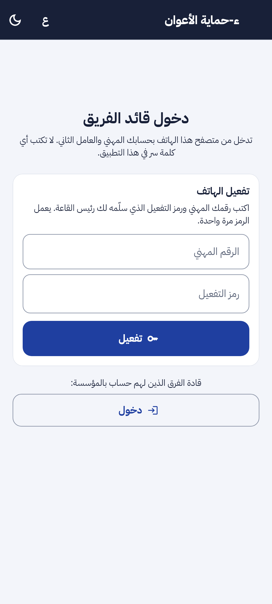
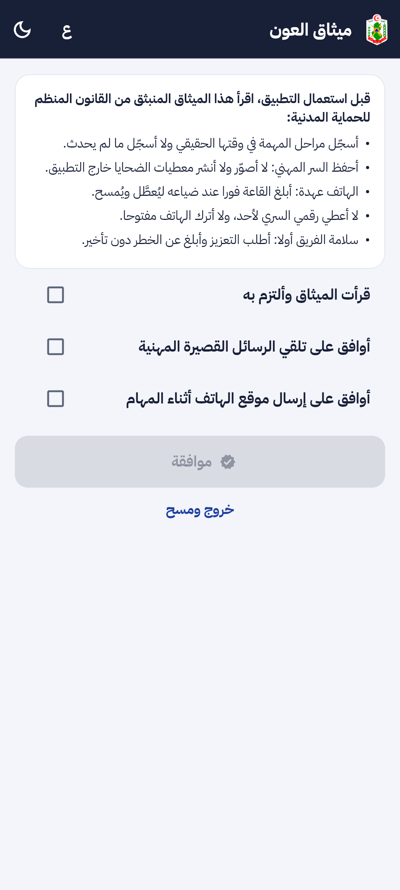
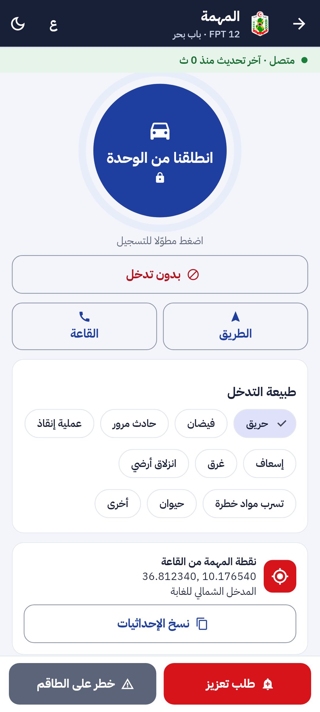
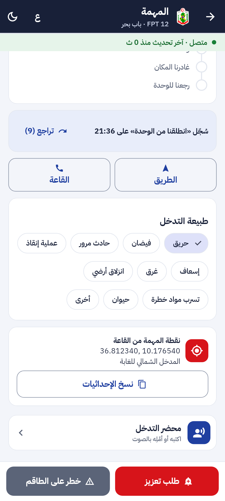
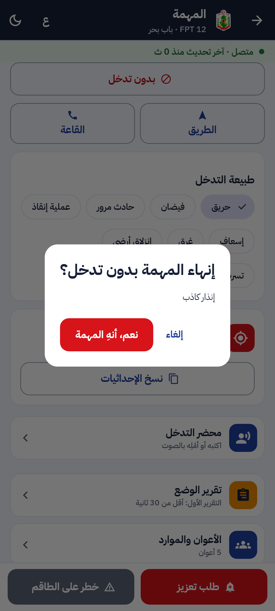
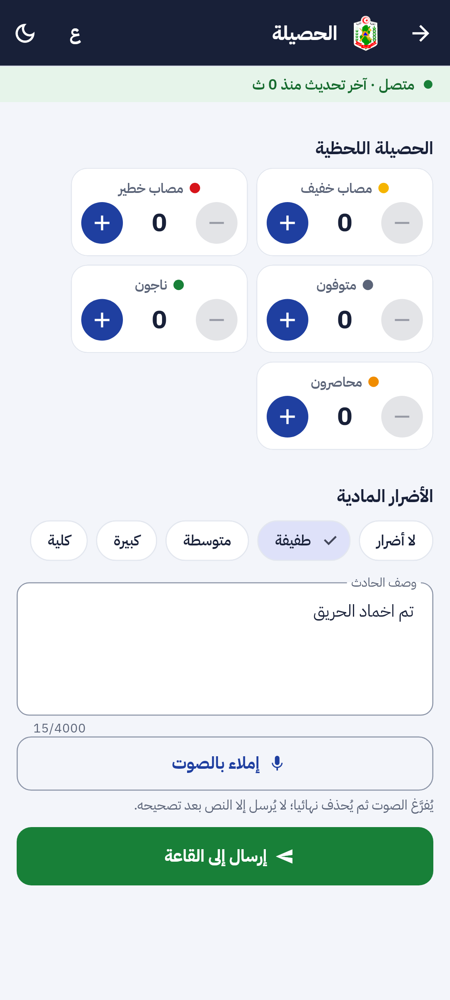
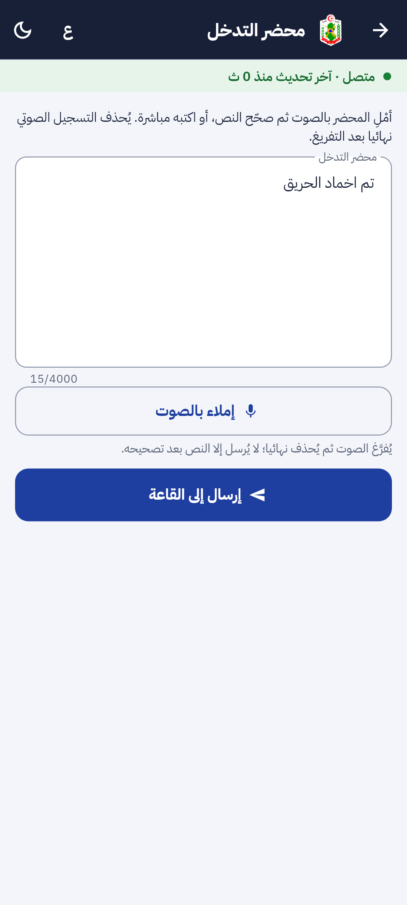
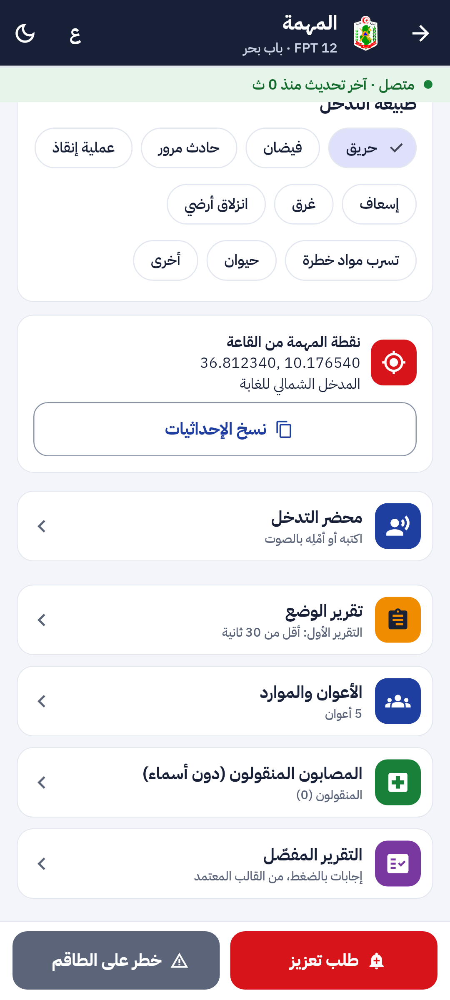
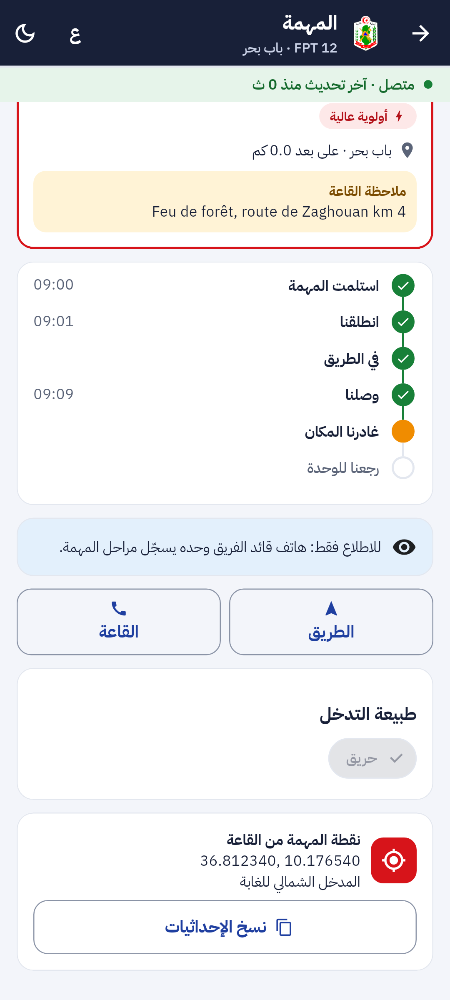
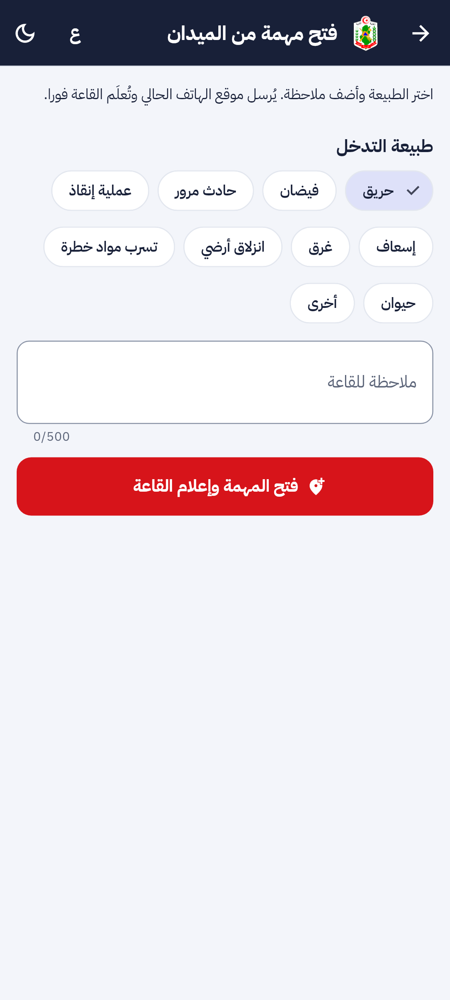

تقرير المرحلة F: مراجعة تطبيق الأعوان. الأعوان ورموز التفعيل، الميثاق، الزر الدائري والتراجع، التجاوز و«بدون تدخل»، طبيعة التدخل، الحصيلة ومحضر التدخل بالصوت، نقطة المهمة من الخريطة، مهمة الميدان، واطلاع بقية الأعوان.
المعالجة: الفريق يسجّل مراحل المهمة بزر واحد واضح، والقاعة ترسل نقطة المهمة وتعرف من يحمل كل هاتف.
التحليل: زمن الوصول (الوصول − الانطلاق)، وأسباب التجاوز و«بدون تدخل»، والحصيلة والمحضر نصوصا مصحّحة تغذي الإحصاءات وSNACR.
2. مراجعة ← تصميم ← تطوير
الطلب: وصف يامن لتطبيق الأعوان نقطة نقطة (2026-10-30)، ثم الموافقة على المقترحات الثلاث مع نقطة المهمة من الخريطة ومحضر التدخل بالصوت. النماذج المعتمدة staff-01 إلى staff-11 في التصميم.
الأمن: رمز التفعيل لا يُحفظ إلا بصمته ويعمل مرة واحدة ويُقفل بعد المحاولات؛ رموز الأعوان بمُصدِر وجمهور خاصين لا يقبلهما غيرهما؛ رمز التجديد يتغيّر في كل استعمال؛ الهاتف والشريحة وIMEI مشفّرة؛ أمن مستوى الصفوف على جدول الأعوان؛ الهاتف المعطّل يتلقى 410 ويُمسح؛ الصوت يُحذف بعد تفريغه؛ وكل تغيير في سجل التدقيق.
اللوحة
فريق النوبة وأجهزة الأعوان (/crew/agents) لرئيس القاعة: الإضافة والرمز مرة واحدة، رمز جديد، IMEI، التعطيل والحذف بسبب.
نقطة المهمة: من التكليف ثم النقر على الخريطة مع ملاحظة.
مسار الفريق تحت التكليف: الطبيعة والتجاوز و«بدون تدخل» والحصيلة والمحضر.
تطبيق الأعوان
التفعيل بالرقم المهني والرمز ثم الرقم السري، ثم الميثاق.
الزر الدائري بلون كل مرحلة، مقفل، ضغط مطوّل 1,5 ثانية ثم «تراجع» 10 ثوان؛ الوقت المسجّل وقت الضغط.
«تجاوز المرحلة» بسبب، و«بدون تدخل» بسبب وتأكيد مزدوج ثم الحصيلة.
الحصيلة ومحضر التدخل: الصوت يُفرَّغ ويُحذف ويصحّح القائد النص.
مهمة الميدان تُعلم القاعة فورا، وبقية الأعوان يرون المهمة دون أزرار.
3. لقطات [SIM]
من التطبيق نفسه بالعربية (بيانات تجريبية):

تفعيل الهاتف بالرقم المهني والرمز

ميثاق العون والموافقتان

الزر الدائري المقفل ونقطة المهمة

«تراجع» بعد التسجيل

«بدون تدخل»: التأكيد الثاني

الحصيلة: الأضرار والوصف المُفرَّغ

محضر التدخل بالصوت

الطبيعة ونقطة المهمة من القاعة

عون المناوبة: اطلاع فقط

مهمة يفتحها الفريق من الميدان
رئيس القاعة يضيف عونا فيظهر رمز التفعيل مرة واحدة:
/field/activate و /field/token و /staff/field-agents و /crew/missions/{id}/nature|skip|no-intervention|toll|report|voice
الإعدادات
4 إعدادات · 2
المفاتيح
field.code_hours و field.code_attempts و field.hold_ms و field.undo_seconds
8. المخرجات المحيَّنة
الملف الوصفي V31 (docx و pdf) في spec/: F-STF-09 إلى 13 و F-DSH-117 و 118 و F-SRV-59 إلى 61، 607 مسارات و732 عملية، 87 ترحيلا، الاختبارات، وخارطة الطريق.
مخططات UML في diagrams/: تفعيل الهاتف والزر الدائري (7l)، ونقطة المهمة والحصيلة والمحضر (7m)، وحالات استعمال رئيس القاعة والقائد وعون المناوبة، وصنف «AgentTerrain».
العرض للمسؤولين في presentation/: 53 مرحلة والاختبارات.